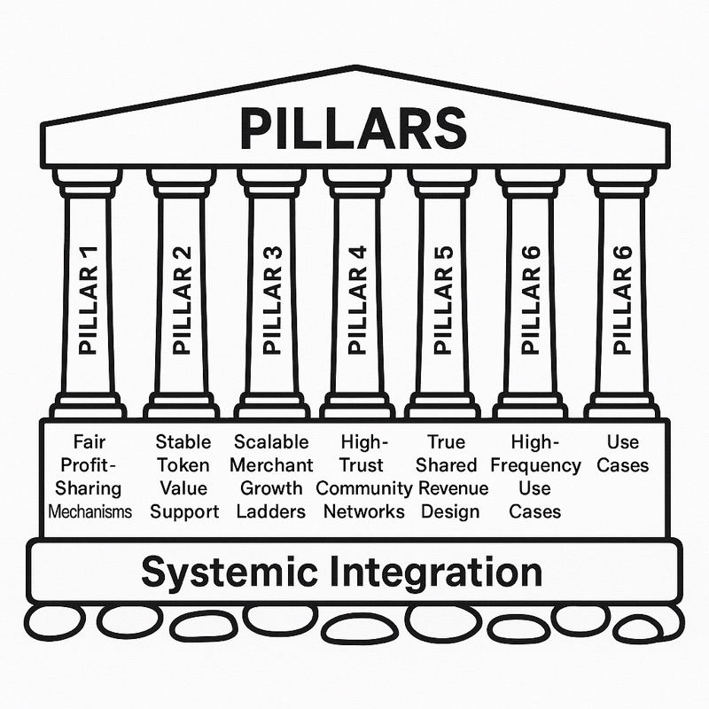

3 鏈上商業的六大支柱
去中心化商業的架構基礎
從傳統平臺式商業向去中心化鏈上商業的轉變不僅需要技術創新。它需要一個全面的框架來解決信任、價值分配、可擴展性和可持續增長的根本挑戰，這些挑戰限制了以往創建公平數位經濟的嘗試。鏈上商業的六大支柱提供了這個框架，為構建能夠大規模運營同時保持去中心化和參與者所有權好處的商業系統提供系統性方法。
這些支柱作為一個集成系統而不是獨立組件共同工作。每個支柱解決傳統商業系統中的特定弱點，同時加強其他支柱以創建穩定、自我維持的經濟生態系統。支柱之間的相互依賴確保鏈上商業系統既能實現實際採用所需的效率，又能實現長期參與者承諾所必需的公平性。
理解這些支柱需要檢查它們的個體功能和在完整鏈上商業實施中的集體運作。正如我們在第1章和第2章中探討的，向基於流通的財富創造的轉變和Web3對傳統平臺模式的顛覆為商業組織的新方法創造了機會。六大支柱提供了在實踐中實現這些機會的具體機制。

3.1 支柱一：公平利潤分享機制
傳統商業系統將利潤集中在平臺所有者和投資者中，而僅向通過其活動實際創造價值的參與者分配工資或小額佣金。鏈上商業系統通過實施自動利潤分享機制逆轉這種動態，該機制根據所有貢獻者對網路成功的實際貢獻在他們之間分配價值。
公平利潤分享通過智能合約運作，根據預定義公式在不同參與者之間自動分配交易收入的部分。當客戶通過鏈上商業系統進行購買時，交易價值流經自動分配機制，立即將適當部分分配給商家、客戶、推薦合作夥伴、網路基礎設施提供商和對交易成功的其他貢獻者。
自動化消除了表徵傳統利潤分享安排的爭議和延遲。參與者在交易完成後立即收到其分配部分，所有計算根據公開可審計的智能合約代碼透明執行。這通過數學確定性而不是依賴機構承諾或法律執行機制創造信任。
具體分配公式可以針對不同類型的企業和市場進行定製，同時保持公平和透明的核心原則。典型分配可能將60%的交易價值分配給客戶作為獎勵，15%分配給商家作為激勵補償，4%分配給推薦合作夥伴，3%分配給區域協調員，18%根據各種網路參與者對交易促進的貢獻在他們之間分配。
這些百分比代表的不僅僅是簡單的收入分享。它們構成了商業價值如何創造和分配的根本重構。鏈上商業系統不是從參與者那裡提取價值以最大化平臺利潤，而是優化參與者成功和網路增長。這創造了正回饋循環，其中成功的參與者吸引更多活動到網路，為所有參與者產生增加的價值。
利潤分享機制還超越個人交易，涵蓋網路增長和發展。對網路擴張、品質改進或基礎設施發展做出貢獻的參與者從其貢獻創造的增加價值中獲得持續補償。這以傳統就業或承包商關係無法實現的方式將個人激勵與集體網路成功對齊。
此外，自動化利潤分享的透明性質使參與者能夠準確理解其補償如何計算，並驗證他們獲得公平待遇。這種透明度減少衝突並在可能對收入分享聲明持懷疑態度的參與者之間建立信任。
3.2 支柱二：穩定代幣價值支撐（AC模型）
許多區塊鏈項目失敗是因為其代幣缺乏有意義的價值支撐，導致投機、波動性，當投機興趣減弱時最終崩潰。Apollo Coin（AC）模型通過真實經濟活動而不是投機交易創造穩定價值支撐來解決這個根本弱點。
AC模型將代幣創造直接與實際商業交易而不是任意代幣生成聯繫起來。當商家通過在其產品上提供百分比折扣參與鏈上商業系統時，這些折扣金額被轉換為分配給客戶和其他網路參與者的AC代幣。這確保每個AC代幣代表通過生產性商業活動實際產生的真實經濟價值。
AC價值支撐的數學基礎通過儲備基金機制運作。當客戶進行購買並獲得等於商家折扣的AC代幣時，相應的美元金額存入為AC代幣價值提供支撐的去中心化儲備基金。這創造了流通的AC代幣與實際持有的儲備美元之間的直接關係，類似於傳統貨幣系統在金本位機制下的運作方式。
市場動態通過自然供需平衡進一步穩定AC價值。當AC代幣交易低於其儲備支撐價值時，出現購買被低估代幣並以其潛在儲備價值贖回的套利機會。相反，當代幣交易高於儲備價值時，可以通過新的商業交易創造額外代幣，增加供應直到價格在內在價值水準附近穩定。
穩定機制使AC代幣能夠作為日常交易的實用貨幣而不是投機投資工具發揮作用。商家可以相信代幣價值將保持相對穩定而接受AC支付。客戶可以持有AC代幣而不擔心表徵許多加密貨幣項目的突然價值崩潰。這種穩定性對於建立信任並在需要可靠價值儲存和交換機制的參與者中實現廣泛採用至關重要。
AC模型還為網路增長和採用創造內置激勵。隨著更多商家加入系統並提供轉換為AC代幣的折扣，總儲備支撐增加，為代幣價值提供更強支撐。同時，增加的商家參與為AC代幣使用創造更多機會，增加對代幣的需求並通過基本供需動態支撐價格穩定。
儲備支撐系統是透明和可審計的，使參與者能夠驗證存在足夠儲備來支撐未償代幣價值。這種透明度建立對系統的信心並減少困擾其他基於代幣項目的投機泡沫或價值崩潰風險。
3.3 支柱三：可擴展的商家成長階梯
鏈上商業系統必須容納從個人企業家到大型既定企業的參與者，同時提供既有利於個體商家又有利於更廣泛網路的增長和發展路徑。可擴展的商家成長階梯創造結構化進步機會，鼓勵參與和投資，同時保持網路凝聚力和共享價值觀。
基礎級別以最小進入障礙歡迎個人企業家和小企業。新商家可以加入鏈上商業網路而無需重大前期投資或複雜資格程序。他們立即獲得基於代幣的獎勵系統、自動化支付處理和幫助他們在網路生態系統內建立業務的基本營銷工具。
隨著商家實現與交易量、客戶滿意度和網路貢獻相關的特定里程碑，他們解鎖對增強功能和好處的訪問。增長階梯可能包括訪問高級分析工具、優先客戶服務、擴展的代幣分配百分比，以及與網路內其他成功商家的協作機會。
區域合作夥伴關係機會代表商家發展的下一個級別，使成功的個體商家能夠與其地理區域的其他商家協調，創建本地商業生態系統。區域合作夥伴可以匯集資源進行營銷活動，分享客戶群，並開發互補服務產品，為本地客戶增加價值，同時加強其市場中的整體網路存在。
商家參與的最高級別涉及與核心網路開發團隊的戰略合作夥伴關係，使大型商家能夠影響網路方向和發展優先級，同時承擔網路增長和穩定的更大責任。這些戰略合作夥伴可能運營多個地點，指導新商家，或提供有利於整個網路生態系統的專業服務。
階梯結構為長期參與和對網路成功的投資創造明確激勵。商家理解他們在網路內的增長取決於為客戶提供真正價值和積極促進網路發展。這以傳統業務發展計劃經常無法實現的方式將個人成功與集體網路繁榮對齊。
增長階梯的每個級別提供有意義的好處，證明與晉升相關的增加承諾和責任的合理性。從個人企業家到區域合作夥伴到戰略聯盟的進展創造了職業發展路徑，可以容納終身商業增長，同時保持與鏈上商業網路的聯繫。
可擴展結構還確保網路治理對不同商業規模和發展階段的參與者需求保持響應。個人企業家通過民主治理機制在網路決策中有發言權，而更大的戰略合作夥伴為網路發展和擴張提供穩定性和資源。
3.4 支柱四：高信任社區網路
傳統多層次營銷和金字塔計劃創建膚淺的社區結構，最終優先考慮招募和層級而不是真正的價值創造和相互支持。鏈上商業網路基於共享成功、透明運營和協作價值創造而不是提取和剝削建立真實的社區關係。
高信任社區網路的基礎在於消除在傳統系統中創造剝削的結構性激勵。鏈上商業參與者不主要從招募新成員或建立下線組織中獲利。相反，他們的成功取決於通過商家服務、客戶滿意度和有利於所有參與者的網路發展活動促進真正的價值創造。
網路透明度創造防止剝削關係發展的問責機制。所有交易、獎勵分配和治理決策都記錄在區塊鏈系統上，使任何參與者能夠驗證公平待遇和適當補償。這種透明度消除了在傳統層級系統中實現操縱和剝削的資訊不對稱。
社區網路結構強調水準協作而不是垂直層級。網路參與相似級別的參與者共同解決問題、分享資源和開發新機會，而不是在組織層級中為有限職位相互競爭。這種協作方法創造更強的關係和更可持續的社區紐帶。
區域集群實現本地社區發展，同時保持與更廣泛全球網路的聯繫。特定地理區域的參與者可以發展個人關係，協調本地營銷努力，並提供相互支持，同時從通過更大網路可獲得的資源和機會中受益。本地社區和全球網路訪問之間的平衡提供個人聯繫和可擴展機會。
教育和支持系統確保所有社區成員獲得網路內成功所必需的知識和資源。成功參與者不是囤積資訊以維持競爭優勢，而是被激勵分享知識和提供指導，因為網路增長通過增加活動和代幣價值升值使每個人受益。
衝突解決機制使社區成員能夠通過透明、公平的過程而不是依賴權威人物的任意決定解決爭議和分歧。去中心化治理系統提供維持社區凝聚力同時保護個人權利和利益的結構化問題解決方法。
高信任社區網路還創造社會驗證和支持系統，幫助參與者在挑戰期間保持動機和承諾。財務激勵和社會關係的結合創造比純粹經濟安排能夠實現的更強參與者保留。
3.5 支柱五：真正的共用收入設計
大多數傳統收入分享計劃提供不代表真正利潤參與的代幣金額或條件性好處。鏈上商業系統實施真正的共用收入設計，參與者獲得實際網路利潤的有意義部分，而不是名義獎勵或有限折扣計劃。
真正的共用收入通過數學公式運作，該公式根據不同類別參與者對網路成功的貢獻在他們之間分配網路收入的特定百分比。這些分配代表真實經濟價值而不是促銷噱頭或營銷費用。參與者理解他們的補償來自真正的利潤分享而不是新參與者招募或其他不可持續來源。
收入分享超越即時交易獎勵，涵蓋持續的網路盈利能力。隨著鏈上商業網路增長並產生增加的交易量，所有參與者通過增加的收入分享而不是讓增長好處被平臺所有者或早期投資者獨佔而從這種增長中受益。
網路參與者通過多種類型的貢獻而不是單一活動獲得收入分享。客戶推薦、商家支持、內容創建、網路治理參與和基礎設施發展都可以基於其對網路成功的實際價值貢獻產生收入分享。這種價值創造機會的多樣性確保具有不同技能和興趣的參與者可以找到有意義的貢獻和受益方式。
共用收入設計還包括通過代幣所有權的升值機會。隨著網路增長並變得更有價值，擁有AC代幣的參與者除了持續收入分享外還從價值升值中受益。這為活躍網路參與者創造即時收入機會和長期財富建設可能性。
收入計算和分配的透明度確保參與者可以驗證其公平待遇並理解其貢獻如何轉化為補償。定期報告和可審計智能合約系統提供網路財務績效和收入分配的可見性，建立信任並使參與者能夠就其網路參與水準做出明智決策。
收入分享公式可以通過民主治理過程隨時間演變，確保隨著網路條件變化，補償結構保持公平和競爭力。參與者在收入分配優先級決策中有發言權，可以提議更好服務網路發展和參與者利益的修改。
3.6 支柱六：高頻次使用場景
成功的鏈上商業網路必須服務具有高頻次使用場景的真實商業需求，而不是依賴投機交易或缺乏實用效用的新穎應用。第六支柱確保網路活動由真正的經濟需求而不是人工採用激勵或投機投資驅動。
高頻次使用場景涉及滿足參與者日常需求的商品和服務，創造定期、可預測的網路活動模式。這些可能包括雜貨購物、餐飲、交通、娛樂、個人服務和其他人們定期消費的商品類別。通過專注於必需品和頻繁購買的商品，鏈上商業網路建立可持續的使用模式，支持長期增長和穩定。
必需品焦點確保網路活動保持對客戶有價值和相關，而不管更廣泛的經濟條件或加密貨幣市場趨勢如何。人們將繼續需要食物、住房、交通和其他基本服務，為網路活動提供穩定基礎，不受投機興趣波動的影響。
地理密度創造網路效應，增加對參與者的便利性和價值，同時減少與線上交易相關的運輸成本和交付時間。當本地區域有足夠數量的參與商家時，客戶可以將AC代幣用於其大部分日常購買，增加代幣實用性並減少轉換回傳統貨幣的需要。
社區整合將鏈上商業網路嵌入本地經濟和社會結構中，創造超越純財務激勵的參與動機。當網路成為社區生活的重要組成部分時，參與者開發維持和支持網路成功的社會和經濟利益。
商家多樣性確保參與者可以將AC代幣用於廣泛的商品和服務，增加代幣在日常生活中的實用性。全面的商家生態系統減少參與者需要轉換回傳統貨幣進行購買的頻率，增加網路內的價值流通並減少外部依賴。
品質標準維持客戶滿意度和網路聲譽，確保高頻次使用產生積極體驗，鼓勵持續參與。網路必須平衡增長與品質控制，確保擴張不會以可能破壞長期成功的客戶體驗為代價。
服務整合創造全面生活方式解決方案，參與者可以通過單一網路訪問其大部分需求。這可能包括與本地服務提供商的夥伴關係，如醫療保健提供者、教育機構、娛樂場所和專業服務，創造一個能夠支持參與者整個生活方式的綜合生態系統。
技術便利性確保高頻次使用保持方便和高效，無論對於精通技術還是不精通技術的參與者。使用者介面、支付處理和客戶服務系統必須支持快速、可靠的交易，不會在日常使用中造成摩擦或延遲。
六個支柱的相互作用創造了超過其組成部分總和的綜合系統。公平利潤分享激勵參與，而穩定代幣價值支撐建立信心。可擴展增長階梯提供發展機會，而高信任社區網路創造支持環境。真正共用收入設計確保參與者從網路成功中受益，而高頻次使用場景提供使整個系統實用和可持續的真實商業應用。
這種集成方法解決了阻礙以往創建公平去中心化經濟嘗試的根本挑戰。通過同時解決技術、經濟、社會和實用考慮，六支柱框架為構建真正服務參與者利益同時實現可持續增長和發展的鏈上商業系統提供全面基礎。
正如我們將在第4章中探討的，這些支柱在「花得越多，賺得越多」系統中發揮作用，創造正回饋循環，獎勵參與並推動網路擴張，同時保持使鏈上商業對所有參與者有價值和公平的核心原則。